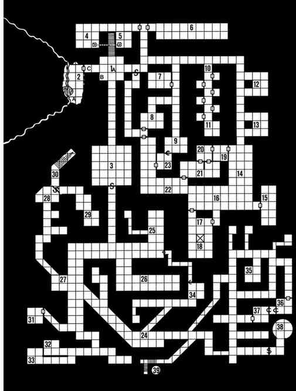

1. 入口厅 · Entry Chamber
这是一个潮湿的拱顶房间，面积 30 尺见方，拱顶中央高 20 尺。拱顶从离地 8 尺处起拱，在顶部会合成穹顶。墙壁由切割石块砌成，地面粗糙。浓密的蛛网遮住了天花板。见下文 A 与 B。
A. 大型蜘蛛 Large Spider：护甲等级 8；移动力 6 英寸／15 英寸；生命骰 1+1（生命值 6）。蛛网中还藏着 9 只生命值为 1 的幼蛛。这只怪物潜伏在房间中央的一堆碎屑正上方，碎屑里有空壳、皮屑、骨头和它自己的排泄物；它正等待新的猎物。除非点燃它所在的蛛网，否则它总能发动突袭攻击。点燃蛛网会对蜘蛛造成 3 点伤害并杀死幼蛛。地面碎屑中有 19 枚银币；一具地精头骨里还藏着一颗价值 50 金币的石榴石，只有拿起头骨仔细查看才会发现。
B. 腐坏的袋子 Rotting Sacks：这里堆着 10 袋发霉的面粉与谷物。布袋很容易撕开检查。如果把所有袋子都打开并搜查，最后一袋中有 25%的概率藏有黄色霉菌；接触时会立刻……

黄色霉菌会爆裂，10 尺范围内的所有生物都必须通过毒素豁免检定，否则会在 1 回合内死亡。
C. 厚重的橡木门 Heavy Oak Door：这扇装有青铜门件的厚重橡木门，只有角色贴近聆听时才显得异样：他们会听见一阵呻吟般的声响，声音渐强，随后又渐渐消退。聆听者不知道，强风正从区域 2 穿过。门一旦打开，强风便会从门口涌出；火把肯定会熄灭，提灯也有 50% 的概率被吹灭。只要门未关上，风就会持续吹过走廊，使火把几乎无法点燃。
上一节：修道院地下室与秘密墓穴 · Monastery Cellars and Secret Crypts
下一节：2. 水室 · Water Room